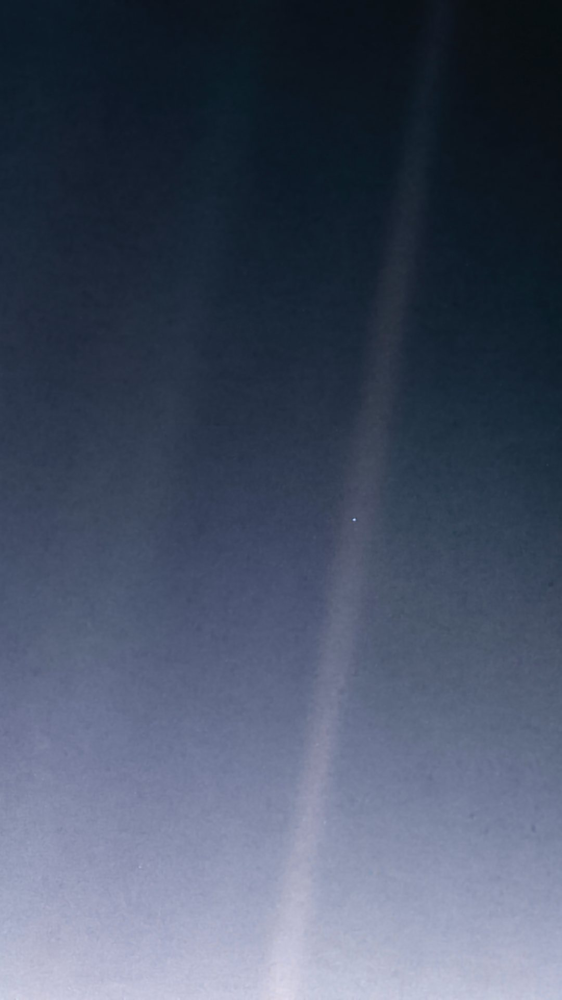

MUGELLO METEO & CLIMA · CIELO
Lanciata nel 1977 · mai così lontano
Voyager 1
a un giorno-luce da casa
È il primo oggetto costruito dall'uomo ad arrivarci.
La sua luce impiega ad arrivare
23:59:57
ore · minuti · secondi
19 novembre 2026
ore 3:17 in Italia
Supera le 24 ore di viaggio della luce:
25.902.068.371 km dalla Terra.
Dati: NASA · JPL Horizons
Quanto ci mette la luce
Dalla Luna
a Voyager
Luna1,3 secondi
Sole8 minuti
Giove43 minuti
Nettuno4 ore
Voyager 124 ore
Un «pronto?» inviato adesso arriverebbe domani.
La risposta, dopodomani.
Il Sistema solare sul Mugello
Se la Terra fosse
a 100 metri dal Sole…
Il Solein piazza a Borgo San Lorenzo
La Terra · 100 muna biglia, a un isolato
Nettuno · 3 kmappena fuori dal paese
Voyager 1 · 17 kmquasi a Firenzuola, oltre il crinale

Quel puntino dentro il raggio di sole è la Terra,
fotografata da Voyager 1 nel 1990.
Segui il contatore
in diretta
Distanza, tempo-luce e punto del cielo dove si trova, calcolati adesso dai dati NASA.
Pagina «Cielo» · Mugello Meteo & Clima
Immagini: NASA/JPL-Caltech